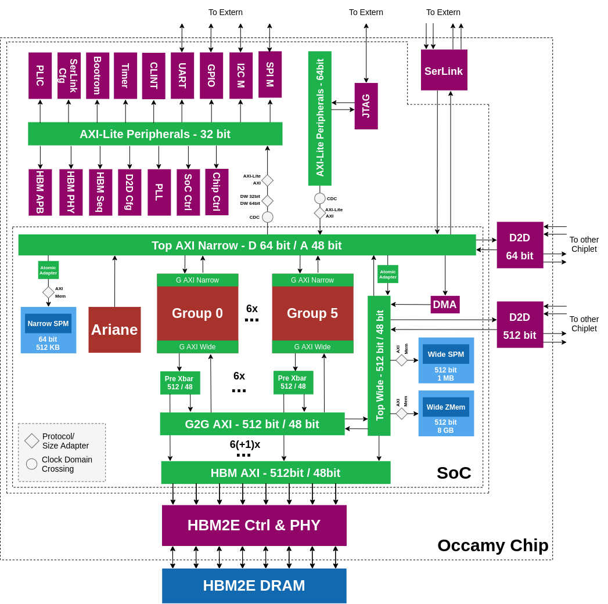
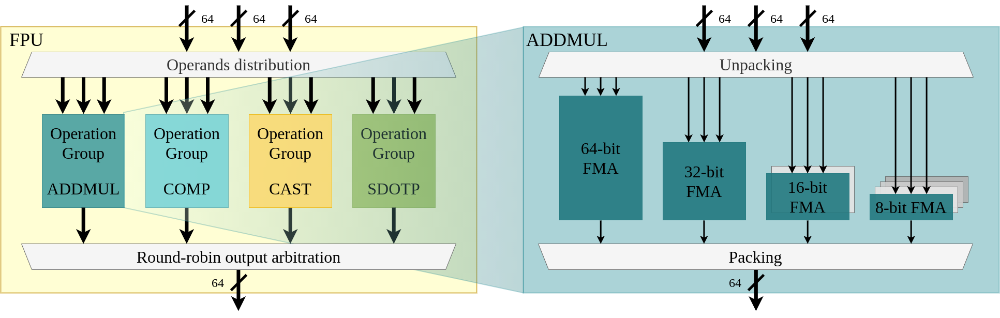
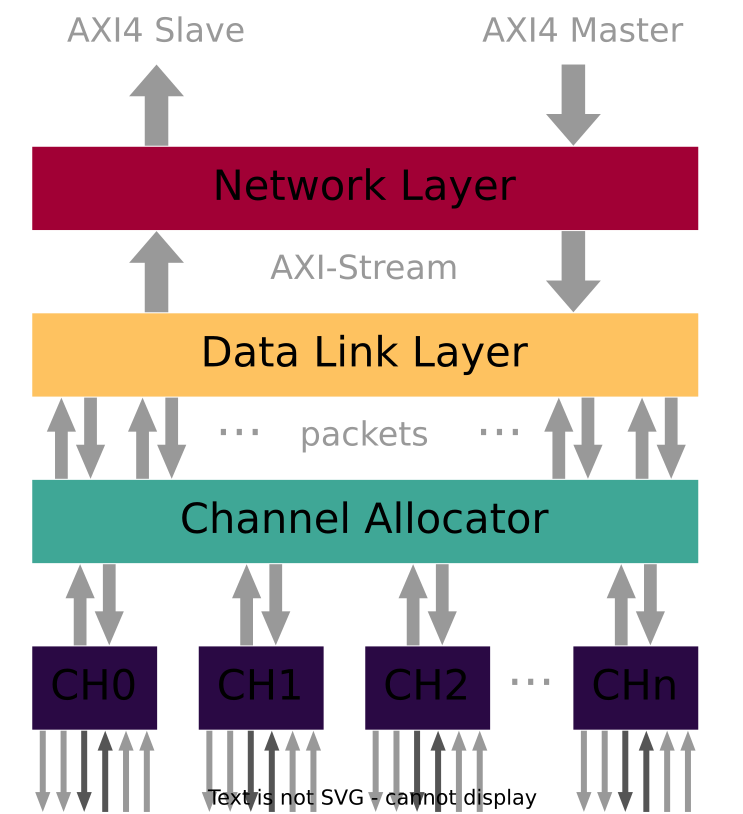

System Components Description
Harts
Every core in the system is associated to a unique RISC-V hart (hardware thread), identified by a unique index.
The CVA6 core is assigned hart ID 0.
The Snitch cores are hierarchically distributed across 6 groups, each containing 4 clusters, each in turn containing 9 cores. The group, cluster and core IDs in this hierarchical subdivision are used to calculate the hart ID:
hart_id = group_id * 4 + cluster_id * 9 + core_id + 1
Occamy Toplevel
The Occamy architecture includes six groups each containing four clusters.

Acceleration Groups and Cluster
Group
A group contains four Snitch clusters, a Constant Cache, and a Zero Memory. There are two crossbars for narrow 64-bit accesses used the Snitch LSU and the wide 512-bit AXI bus used by the instruction caches and the DMA. The group is a standalone clock-gated and reset domain and both narrow and wide AXI ports can be isolated.

The group and its components can be controlled via the :ref:group_control_registers, which are SoC-clocked and SoC-reset to provide reset, gating, and isolation control at all times.
Constant Cache
The constant cache can be dis-/en-abled and configured via the group_control_registers.
TLBs
Each group features two independent TLBs, one for their narrow and one for their wide interface.
They can be enabled, disabled, and configured via the group_control_registers. Accordingly, TLB configuration is system-reset, externally accessible while the group is clock-gated, and persists through internal group resets.
After SoC reset, both TLBs are bypassed, passing all internal requests to the external NoC without filtering or translation. This can be toggled by the TLB_WIDE_ENABLE and TLB_NARROW_ENABLE registers, respectively.
The TLBs are passive, meaning that their page tables are intended to be explicitly programmed before use. This can be done by the CVA6 host or by the group cores themselves if the TLB is bypassed or its registers are mapped in the narrow TLB's page table beforehand. Thus, the host can reserve full control of the memory mapping of each group or delegate it as needed.
Both TLBs provide eight entries, each of which consists of an aligned block of registers. The first three register pairs encode three 36-bit page numbers required to address our 48-bit address space:
PAGEIN_FIRST: The first page of this entries' mapped input rangePAGEIN_LAST: The last page of this entries' mapped input rangePAGEOUT_BASE: The base page of this entries' output range
Additionally, each entry has a seventh FLAGS register, with a valid bit indicating whether this entries' mapping is active and a read_only bit indicating whether writes to this region are permitted or blocked.
When a request enters a non-bypassed TLB, it's base address' page will be matched against all active entries, with lower entry indices taking precedence. If a match is found, the address' page number will be replaced with the entries' PAGEOUT_BASE. If no match is found or the request is a write to a read-only region, an AXI error response is returned and the request does not pass through the TLB.
Note: The group cores are not designed to handle AXI error responses in general, and their behavior is generally undefined in this case. Thus, the programmer must correctly configure any accessed external range in the TLBs before running code on group cores that accesses these memory regions.
Cluster
A cluster contains eight worker Snitch Cores, each of which combines a small integer core, a trace L0 instruction cache, and a large double-precision Floating Point Unit (FPU) kept busy with the SSR and FREP extensions. An additional ninth Snitch Core controls a cluster-level DMA engine and can be used for cluster coordination. The DMA-core has a smaller configuration FPU. All cores share a tightly-coupled 128 KiB L1 SPM. The Snitch Cores also share a two-way 8KiB L1 instruction cache and an integer Multiply Divide Unit (MulDiv). Finally, the DMA engine and L1 instruction cache share a duplex 512-bit AXI crossbar connection to the global memory system, which all Snitch cores can access through a 64-bit secondary AXI crossbar; both crossbars are internally connected for convenience.

Cluster Memories
A cluster contains a 128 KiB TCDM acting as a software-managed L1 cache. The TCDM is divided into 32 memory banks, each 64 bit wide, via a single-cycle SPM interconnect. Each core has four 64-bit ports to the TCDM to achieve full utilization on all three SSR streams. Blocks of eight banks form superbanks, which are accessed in parallel by the 512-bit DMA engine through a secondary wide interconnect.
Each cluster contains 64KiB of Zero Memory. The Zero Memory is a memory where all read access are returning 0-data and all writes are accepted without an actual data write happening.
DMA
The ninth Snitch core in the cluster is used for DMA transfers and/or worker cores coordination. It features a tightly-coupled DMA engine that can be controlled with custom ISA extensions. The DMA transfers can be issued asynchronously with the ISA extensions and the DMA supports a configurable number of outstanding DMA transfers. The DMA issues burst-based AXI transfers on the wide 512-bit AXI interconnect. The AXI bus is connected to the cluster crossbar from where a transaction can either be directed to the TCDM or out to the global memory system. The DMA also features a HW extension that allows to issue 2D transfers that are automatically remapped to 1D transfers.
FPU
The FP-SS, bundles an IEEE-754 compliant FPU with a 32x64 bit registerfile. The FP-SS has its own dedicated scoreboard where it keeps track of all registers in a similar fashion to the integer core. Operations without dependencies can be issued back to back. In addition to the FPU it also contains a separate LSU dedicated to loading and storing floating-point data from/to the floating-point RF, the address calculation is performed in the integer core, which significantly reduces the area of the LSU. Furthermore, the Snitch-CC contains three SSRs (2.1.1 SSR) which map, upon activation through a CSR write, registers ft0, ft1 and ft2 to memory streams. The FPU is parameterizable in supported precision and operation latency. All floating-point operations are fully pipelined (with possibly different pipeline depths).
Supports the following number formats:
| Format | Total Bitwidth | Exponent Width | Mantissa Width |
|---|---|---|---|
| IEEE binary64 (double) | 64 | 11 | 52 |
| IEEE binary32 (single) | 32 | 8 | 23 |
| IEEE binary16 (half) | 16 | 5 | 10 |
| custom binary16alt (bfloat16) | 16 | 8 | 7 |
| custom binary8 | 8 | 5 | 2 |
| custom binary8alt | 8 | 4 | 3 |
The Occamy FPU is a modular design containing hardware units dedicated to each operation group. The enabled operation groups are: ADDMUL (fma, add, mul, ...), CAST (conversions), COMP (comparison), SDOTP (dot products). The support for FP division and square root has been disabled as such instructions will not often be used in the application scenarios targeted by Occamy. If FP division and square root are needed, they can be software emulated on the integer datapath.
ADDMUL, CAST, and COMP operations can work on all the enabled formats. In contrast, SDOTP only targets low-mixed-precision operations.
The ADDMUL operation group block contains: (i) one 64-bit FMA, (ii) one 32-bit FMA, (iii) two 16-bit FMAs, (iv) four 8-bit FMAs. Larger-precision units support lower-precision computations. That means that per FPU, one FP64 FMA/cycle, two FP32 FMA/cycle, four FP16 FMA/cycle, four FP16ALT FMA/cycle, eight FP8 FMA/cycle, or eight FP8ALT FMA/cycle can be computed.

The SDOTP operation group block contains two 16-to-32-bit ExSdotp (expanding sum of dot products) units and two 8-to-16-bit ExSdotp units. ExSdotp operations can be performed on operands expressed in FP8/FP8ALT/FP16/FP16ALT and using an accumulator which is expressed with twice as many bits (e.g. source format FP8ALT, accumulator format FP16). Larger precision units support lower-precision computations as well; thus two 16-to-32-bit ExSdotp per cycle per FPU can be carried out, or four 8-to-16-bit ExSdotp per cycle per FPU.

The CAST operation group block contains a single unit capable of performing all the conversions. The COMP operation group block contains (i) one FP64 unit, (ii) two FP32 units, (iii) four FP16 units, (iv) four FP16ALT units, (v) eight FP8 units, (vi) eight FP8ALT units.
Each operation group block contains a parameterized pipeline depth: 3 sets of pipeline registers are used for ADDMUL and SDOTP, 2 for CONV, and 1 for COMP.
To sum up:
| Operation | Latency [cycle] | Throughput per FPU [output/cycle] |
|---|---|---|
| FP64 FMA | 4 | 1 |
| FP32 FMA | 4 | 2 |
| FP16/FP16ALT FMA | 4 | 4 |
| FP8/FP8ALT FMA | 4 | 8 |
| All conversions | 3 | 1 |
| FP64 Comparisons | 2 | 1 |
| FP32 Comparisons | 2 | 2 |
| FP16/FP16ALT Comparisons | 2 | 4 |
| FP8/FP8ALT Comparisons | 2 | 8 |
| FP16/FP16ALT-to-FP32 ExSdotp | 4 | 2 |
| FP8/FP8ALT-to-FP16/FP16ALT ExSdotp | 4 | 4 |

Cluster Peripherals
Each cluster hosts the following set of peripherals, accessible from the 64-bit AXI crossbar:
- Performance counters
- Cluster CLINT
- Hardware barrier unit
- Shared control and status registers (CSRs)
The hardware barrier unit is described in synchronization. The cluster CLINT is described in interrupts.
The cluster peripherals are memory-mapped in the PERIPHERAL region of each cluster's address space.
Serial Link
Occamy features multiple custom serial link interfaces to connect the two dies together as well as to provide a connection to a host system like an FPGA. The serial link is a simple all-digital Double-Data-Rate (DDR) link with a source-synchronous interface. The link is scalable in terms of number of channels and lanes and occur in different configurations in Occamy. The Link has an AXI4 interface and implements Network, Data Link and Physical Layer.

Die-2-Die (Wide)
The wide Serial Link is the main Die-2-Die link which is used to transfer large amount of data from one die to the other die with the DMAs in Occamy. It is connected to the wide 512-bit AXI interconnect of the system. The wide Serial Link has a relatively high bandwidth due the large number of channels. The exact configuration is shown below.
| Parameter | Value |
|---|---|
| #Channels | 38 |
| #Lanes | 8 |
| #Wires | 684 |
| Max I/O clock frequency | 250 MHz (default 125 MHz) |
| Max Bandwidth (duplex) | 304 Gbps @ 250 MHz |
Transfers over the Wide Serial Link to the other die can be done by issuing DMA requests where the MSB+1 (used bits) of the address is set i.e. adding an offset off 0x100_0000_0000. The entire address space of the other die is accessible this way.
| Address | |
|---|---|
| Configuration register base address | 0x0600_0000 |
| Start address | 0x100_0000_0000 |
| End address | 0x1ff_ffff_ffff |
The AXI interface of the Wide Serial Link can be isolated with its SERIAL_LINK_CTRL register. Further the Wide Serial Link can be SW reset and clock gated.
Die-2-Die (Narrow)
The narrow Serial Link is connected to the narrow AXI interface of Occamy. It can be used to transfer smaller amounts of data from one die to the other die i.e. for the purpose of synchronization. Compared to the Wide serial Link, it has a relatively low bandwidth. The exact configuration is shown below.
| Parameter | Value |
|---|---|
| #Channels | 1 |
| #Lanes | 8 |
| #Wires | 18 |
| Max I/O clock frequency | 250 MHz (default 125 MHz) |
| Max Bandwidth (duplex) | 8 Gbps @ 250 MHz |
The Narrow Serial Link can be accessed with normal load stores and by setting the MSB+1 (used bits) bit of the address i.e. adding an offset of 0x100_0000_0000. The entire address space of the other die is accessible this way.
| Address | |
|---|---|
| Configuration register base address | 0x0700_0000 |
| Start address | 0x100_0000_0000 |
| End address | 0x1ff_ffff_ffff |
The AXI interface of the Narrow Serial Link can be isolated with its SERIAL_LINK_SINGLE_CHANNEL_CTRL register. Further the Narrow Serial Link can be SW reset and clock gated.
FPGA / Off-System Link
The FPGA Serial Link is used to connect Occamy to the outside i.e. an FPGA board. This can be used for instance to preload binaries or employ applications remotely.
| Parameter | Value |
|---|---|
| #Channels | 1 |
| #Lanes | 8 |
| #Wires | 18 |
| Max I/O clock frequency | 250 MHz (default 125 MHz) |
| Max Bandwidth (duplex) | 8 Gbps @ 250 MHz |
The FPGA Serial Link is always-on and cannot be isolated, clock-gated. It is resetted with the global reset.
| Address | |
|---|---|
| Configuration register base address | 0x0500_0000 |
| Start address | 0x2000_0000 |
| End address | 0x6fff_ffff |
CVA6
Occamy features one CVA6 core that serves as a manager of the system.
CVA6 is an application-class, in-order, 64-bit RISC-V core.
It supports the RV64GC ISA, meaning that it can run a rich operating system such as Linux.
For more information on CVA6, refer to the CVA6 GitHub repository or its user manual.
This section documents Occamy-specific modifications and the configuration of CVA6.
Configuration
CVA6 L1 data cache configuration | Parameter | Value | | --------------- | ---------- | | Write policy | Write-back | | Size | 2 KiB | | Cacheline width | 16 bytes | | Associativity | 8-way | | #Sets | 256 |
CVA6 L1 instruction cache configuration | Parameter | Value | | --------------- | ---------- | | Size | 16 KiB | | Cacheline width | 16 bytes | | Associativity | 4-way | | #Sets | 256 |
CVA6 branch predictors | Component | Configuration | | -------------------- | ------------- | | Return-address stack | 2 entries | | Branch target buffer | 32 entries | | Branch history table | 128 entries |
CVA6 FPU configuration | Parameter | Value | | ------------------- | -------- | | XF16 | disabled | | XF16ALT | disabled | | XF8 | disabled | | XF8ALT | disabled | | XFVEC | disabled | | FP64 comp latency | 3 cycles | | Div/Sqrt latency | 2 cycles | | Non-comp latency | 1 cycles | | Conversion latency | 2 cycles | | Dot product latency | 2 cycles |
Further CVA6 parameters | Parameter | Value | | ------------------------------- | ---------- | | Pysical memory protection (PMP) | 8 entries | | Data TLB | 16 entries | | Instruction TLB | 16 entries |
Physical Memory Attributes (PMAs)
| Start | End | Description | Executable | Cached | Non-Idempotent |
|---|---|---|---|---|---|
0x0000_0000 |
0x0000_0fff |
Debug module | yes | no | no |
0x0000_1000 |
0x00ff_ffff |
unmapped | no | no | yes |
0x0100_0000 |
0x0101_ffff |
Bootrom | yes | no | no |
0x0102_0000 |
0x6fff_ffff |
Peripherals | no | no | yes |
0x7000_0000 |
0x7007_ffff |
SPM | yes | yes | no |
0x7008_0000 |
0x7fff_ffff |
unmapped | no | no | yes |
0x8000_0000 |
0xffff_ffff |
HBM 0,1 | yes | yes | no |
0x1_0000_0000 |
0xf_ffff_ffff |
unmapped | no | yes | no |
0x10_0000_0000 |
0x11_ffff_ffff |
HBM 0-7 | yes | yes | no |
0x12_0000_0000 |
0xff_ffff_ffff |
unmapped | no | yes | no |
0x100_0000_0000 |
end | unmapped | no | no | no |
AXI Interface
Compared to the upstream version of CVA6, a few minor custom modifications were done to its AXI interface.
- For compatibility with the remainder of the Occamy system, AXI requests by CVA6 are marked as modifiable (
ax.cache = 0x2). - As for all cores within Occamy, the
usersignal of all AXI requests issued by CVA6 containshartid + 1. This allows for scalable atomics support.
Temporal Fence Instruction
For experimental purposes, CVA6 in Occamy is extended by the custom temporal fence instruction (fence.t).
fence.t can be used to prevent on-core timing channels, as described in the fence.t paper_.
fence.t is mapped to the opcode 0xfffff00b.
Furthermore, two custom CSRs that configure fence.t are added to enable a history-independent context-switch latency:
| CSR | Address |
|---|---|
FENCE_T_PAD |
0x702 |
FENCE_T_CEIL |
0x703 |
fence.t will defer completion until FENCE_T_PAD cycles have passed since the most recent CLINT timer interrupt.
The FENCE_T_CEIL CSR serves for evaluation purposes and is subdivided into two fields:
| Bit(s) | Field |
|---|---|
| 0 - 31 | fence_t_ceil |
| 32 | fence_t_src_sel |
| 33 - 63 | Reserved |
fence_t_ceil contains the greatest observed number of cycles between the most recent CLINT timer interrupt and the completion of fence.t before padding.
It is capped to FENCE_T_PAD.
It can be used to determine an upper bound of the context-switch latency and hence a suitable value for FENCE_T_PAD.
If fence_t_src_sel is set, fence.t will pad with respect to the most recent privilege switch from U-mode instead of the most recent CLINT timer interrupt.
This is required for performance estimations e.g., based on fast-path context switches, which are not triggered by a CLINT timer interrupt.
Note: Setting fence_t_src_sel might render the security properties (history-independent context switch latency) of fence.t invalid and should only be used for performance evaluation.
- CVA6 GitHub repository: https://github.com/openhwgroup/cva6
- user manual: https://docs.openhwgroup.org/projects/cva6-user-manual/
- fence.t paper: https://doi.org/10.1109/TC.2022.3212636
System-level DMA
TODO
System Memories
Occamy has three system-level memories plus the 8GB HBM2e memory:
| Memory | Word width | Size | Start Address | End Address |
|---|---|---|---|---|
| Narrow SPM | 64-bit | 512 KB | 0x00_7000_0000 | 0x00_7007_ffff |
| Wide SPM | 512-bit | 1 MB | 0x00_7100_0000 | 0x00_710f_ffff |
| Wide Zero Memory | 512-bit | 8 GB | 0x01_0000_0000 | 0x02_ffff_ffff |
| HBM0 | 512-bit | 1 GB | 0x10_0000_0000 | 0x02_ffff_ffff |
| HBM0 alias | 512-bit | 1 GB | 0x00_8000_0000 | 0x00_bfff_ffff |
| HBM1 | 512-bit | 1 GB | 0x10_4000_0000 | 0x02_ffff_ffff |
| HBM1 alias | 512-bit | 1 GB | 0x00_c000_0000 | 0x00_ffff_ffff |
| HBM2 | 512-bit | 1 GB | 0x10_8000_0000 | 0x02_ffff_ffff |
| HBM3 | 512-bit | 1 GB | 0x10_c000_0000 | 0x02_ffff_ffff |
| HBM4 | 512-bit | 1 GB | 0x11_0000_0000 | 0x02_ffff_ffff |
| HBM5 | 512-bit | 1 GB | 0x11_4000_0000 | 0x02_ffff_ffff |
| HBM6 | 512-bit | 1 GB | 0x11_8000_0000 | 0x02_ffff_ffff |
| HBM7 | 512-bit | 1 GB | 0x11_c000_0000 | 0x02_ffff_ffff |
The Narrow SPM is mainly utilized by CVA6, the wide SPM can be used to store data or as a SW controlled data cache in front of the HBM.
The rather large memory range of 8GB of the Wide Zero Memory helps to preload the HBM with 0s to avoid ECC errors when accessing non-full words with the system-level DMA.
The 8GB HBM memory is by default a continous memory region where each bank has the size of 1GB.
By changing INTERLEAVED_ENA from 0 to 1, the 8GB gets addressed in an interleaved fashion.
AXI crossbar(s)
TODO
Peripherals
Occamy includes the following peripherals:
- bootrom
- gpio
- i2c
- jtag
- plic
- clint
- spi
- timer
- uart
SoC Control Registers
TODO
Chip Control Registers
TODO
Control Register Files Overview
TODO